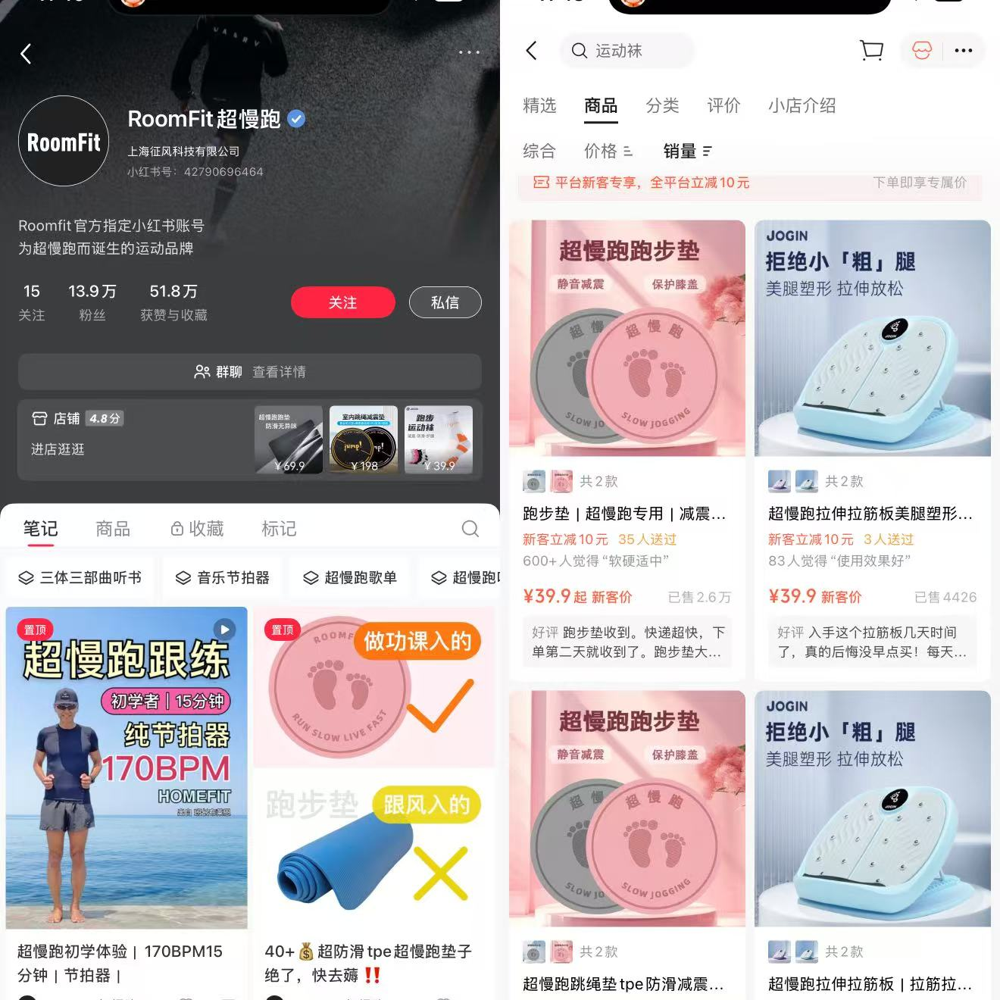
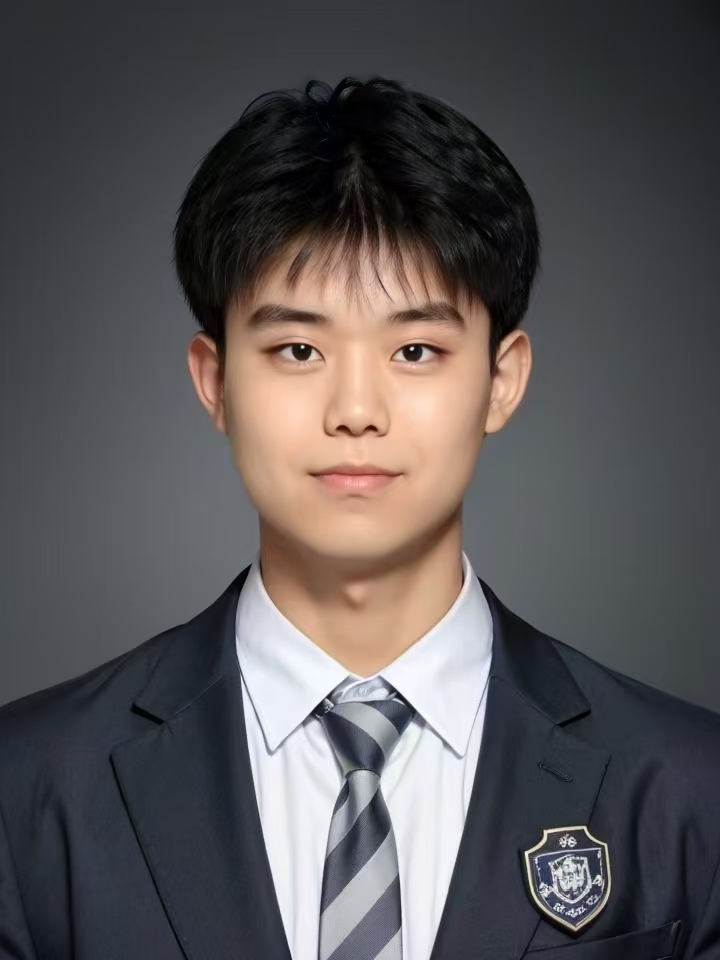
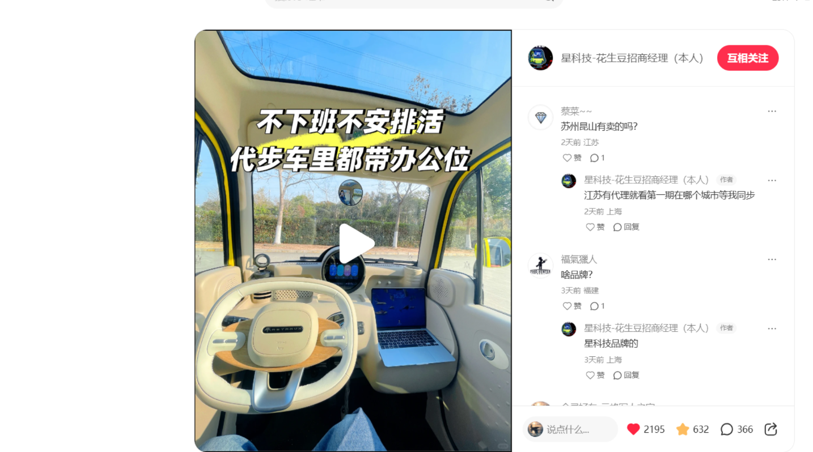
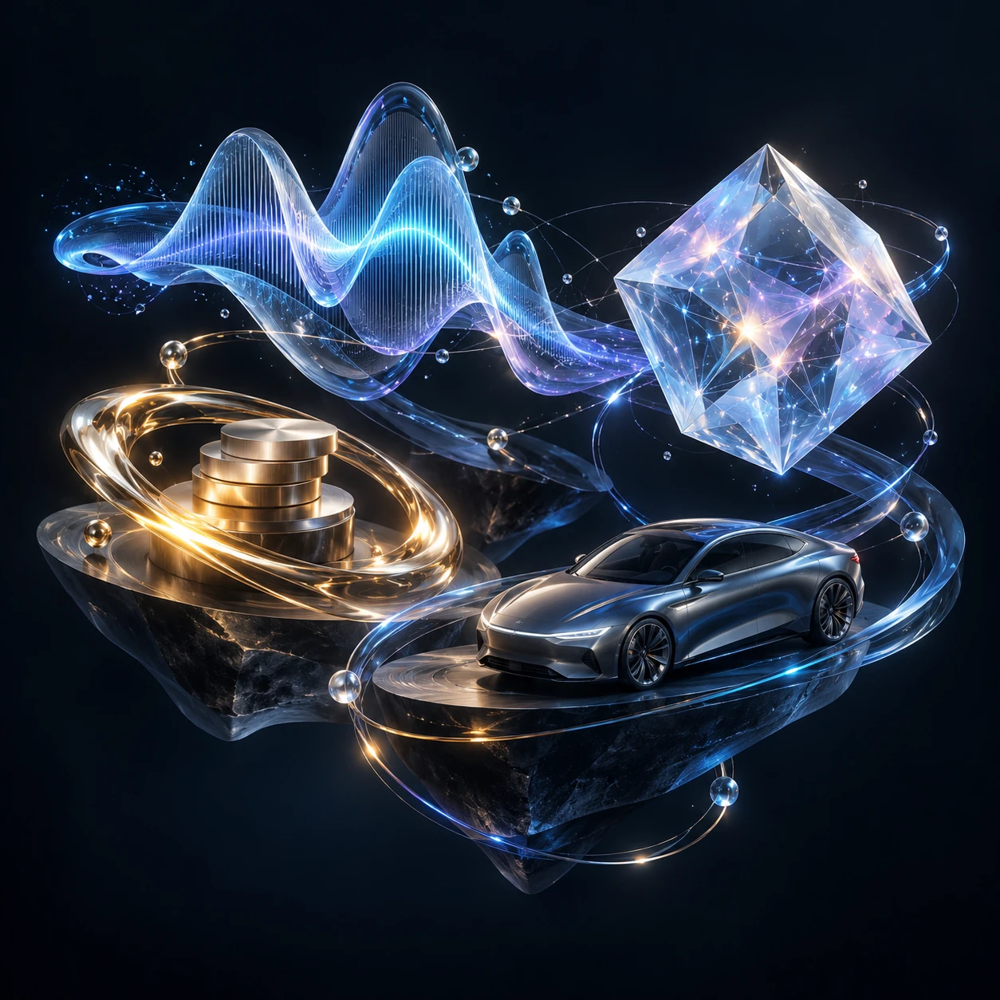
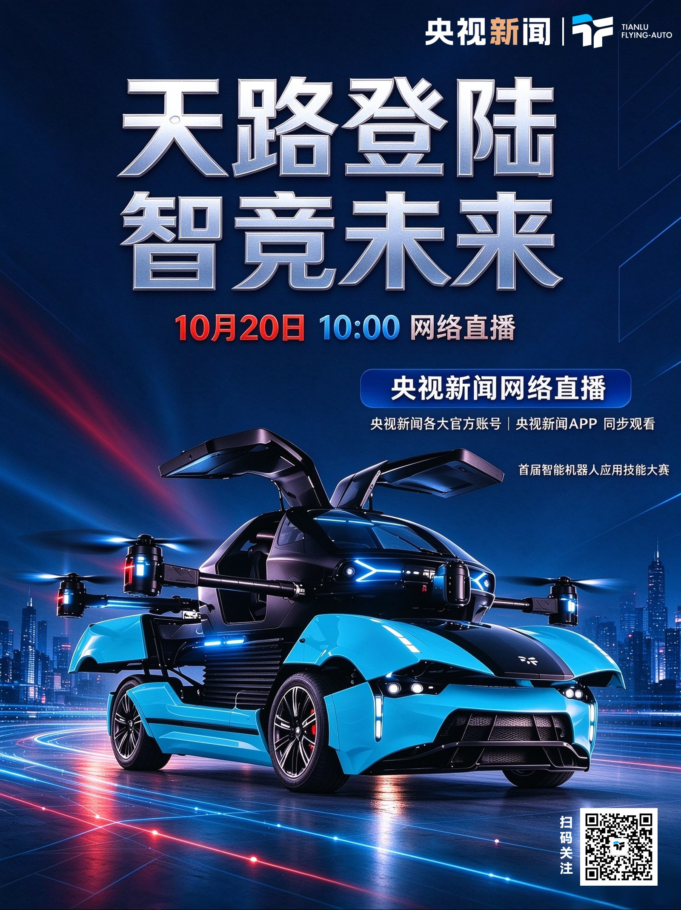

项目案例
RoomFit 超慢跑
从内容种草到商品转化的
运动健康品牌
运营运动健康账号，围绕超慢跑、听书和居家跟练组织内容，协同达人合作与电商活动，把用户兴趣接到商品理解和购买。
13.9万账号粉丝 240万+项目GMV
查看完整案例
上海在职
超级 AI 个体杨戴霖新媒体增长与产品运营
运动健康账号粉丝
参与单品项目GMV
部门累计线索
军人账号三个月涨粉

我专注于新媒体内容增长、产品运营与 AI 应用实践。
从运动健康品牌到企业服务，从 App 到小程序和智能体，
擅长从用户需求出发，把产品价值讲清楚，把内容接到业务。
用户场景与产品价值
选题、脚本与结构
图文、视频与素材
人工检查与反馈
从内容增长到产品运营的实战
从内容种草到商品转化的
运动健康品牌
运营运动健康账号，围绕超慢跑、听书和居家跟练组织内容，协同达人合作与电商活动，把用户兴趣接到商品理解和购买。
13.9万账号粉丝 240万+项目GMV
查看完整案例
把 AI 产品能力
讲成用户听得懂的价值
围绕账号授权、AI 私信与智能工牌，参与需求整理、功能表达和内容运营，用企业客户熟悉的业务场景承接产品价值。
智能工牌内容获得20+家企业询盘
查看完整案例账号授权、AI 私信与企业服务
做有共鸣的内容
也做有承接的获客
面向军人、汽车、招商与企业服务，负责选题脚本、图文视频制作及互动复盘，与销售协同承接内容带来的咨询。
军人账号三个月涨粉2.6万 部门线索1000+
查看完整案例
从产品定位
到营销增长方案
围绕“边打字，边学外语”的产品价值，开展市场与竞品研究，设计目标用户、渠道内容、账号分工与首轮需求验证。
增长方案、账号资料、内容排期与演示素材
查看完整案例 把学习融入每一次输入
把学习融入每一次输入
跨产品做内容
沿用户需求做运营
参与灵动歌词、攒金、众寻好车小程序和投标智能体，通过图文视频、卖点提炼和需求梳理，帮助产品被理解、被使用。
覆盖 App、小程序与 AI 智能体
查看完整案例
灵动歌词攒金众寻好车投标智能体App、小程序与 AI 智能体的内容表达

TypeLearn产品营销增长方案与内容实践从用户需求出发，参与多款产品的内容与运营
四版一页 PDF